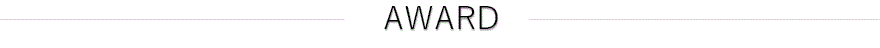

TVISION INSIGHTS株式会社(TVI)は、テレビの「視聴質」を計測する会社です。TVIが開発した中距離に特化した最先端の人体認識技術を活用し、リビングルームでのテレビの視聴態勢を取得してデータ化する手法は世界的にも稀であり、既存にはない極めてユニークなデータセットを創業以来取得・蓄積してきました。現在はグローバルに拠点を広げ、東京・ボストン・ニューヨークにて展開。異なる市場でのチャレンジに挑みつつ、テレビの持つ本来のポテンシャルを顕在化すべく、急速な成長を続けております。
-
郡谷 康士代表取締役
東京大学法学部卒。
マッキンゼー・アンド・カンパニーにて、事業戦略・マーケティング戦略案件を数多く担当。
リクルート中国の戦略担当を経て、上海にてデジタル広告代理店游仁堂(Yoren)創業。
2015年よりTVISION INSIGHTS (TVI)を創業し、代表取締役に就任。 -
河村 嘉樹取締役/営業責任者
早稲田大学スポーツ科学部卒。
メリルリンチ日本証券にて、事業法人・金融法人に対する債券運用等の提案・販売に従事。
クレディ・アグリコル証券を経て、ミャンマーにて複数の事業立ち上げに参画。
2015年よりTVISION INSIGHTS (TVI)を創業し、取締役・営業責任者に就任。 -
劉 延豊(Yan Liu)取締役
東京工業大学工学部卒、MIT MBA。
マッキンゼー・アンド・カンパニーにて、国内外の案件を幅広く担当。
上海にてデジタル広告代理店游仁堂(Yoren)を創業。
TVISION INSIGHTS創業者・取締役。TVision Insights Inc. CEO。 -
Raymond Fuチーフ・サイエンティスト
イリノイ大学博士課程修了。
ビッグデータ、マシンラーニング、コンピュータービジョンのスペシャリスト。
アカデミックな知見が豊富で論文多数。ノースイースタン大学准教授の顔も持つ。
- 会社名：
- TVISION INSIGHTS株式会社
- 所在地：
- 東京都港区西新橋3-24-5 御成門ビル9F
- 設立日：
- ２０１５年３月６日
- 社員数：
- １５名（パートタイム含む）
- 主要取引銀行：
- 三井住友銀行 新橋支店、みずほ銀行 神谷町支店、日本政策金融公庫
- 事業内容：
- テレビを対象としたメディアリサーチ、テレビＣＭ・番組の効果測定分析サービスの提供
